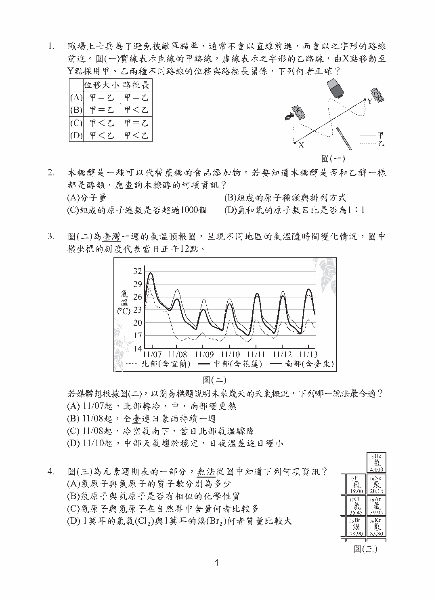

第 1 題對應：九上1-1
戰場上士兵為了避免被敵軍瞄準，通常不會以直線前進，而會以之字形的路線前進。圖(一)實線表示直線的甲路線，虛線表示之字形的乙路線，由X點移動至Y點採用甲、乙兩種不同路線的位移與路徑長關係，下列何者正確？

此題選項為圖形，請參閱下方官方題本頁面圖片作答。
正解 (B) 位移只與起點、終點的直線距離有關，路徑長則是實際走過的總長度。甲、乙兩路線的起點(X)與終點(Y)相同，故兩者位移相同；但乙為之字形，實際路徑較長，因此乙的路徑長大於甲的路徑長。
第 8 題對應：九上7-1
圖(六)是世界文學名著《小王子》中的某段場景與內容：若以箭頭表示太陽光方向與地球自轉方向，下列何者最符合文中畫雙底線處的狀態？
此題選項為圖形，請參閱下方官方題本頁面圖片作答。
正解 (C) 《小王子》中主角只要移動椅子就能連續看到多次日落，其原理是自轉速度極快，使觀察者相對太陽的朝向快速改變；判斷時須使地球自轉方向與太陽光方向的相對關係，符合「觀察者不斷轉向背對太陽」而看見一次次日落的情境。
第 10 題對應：九上6-1
圖(八)為中洋脊附近的剖面示意圖，並標示中洋脊旁的X處與離中洋脊較遠的Y處、Z處海洋地殼。根據上述，下列何者最可能為X處、Y處、Z處的海洋地殼年齡關係？
此題選項為圖形，請參閱下方官方題本頁面圖片作答。
正解 (D) 中洋脊是海底擴張、新海洋地殼不斷生成之處，離中洋脊愈遠的地殼形成時間愈早、年齡愈大，故越靠近中洋脊的X處地殼年齡最年輕，離中洋脊愈遠的Y、Z處年齡依序遞增。
第 13 題對應：九下2-4
如圖(九)，將銅線製成的兩相同螺線形線圈(螺線管)，分別與相同的檢流計連接，另取兩個相同的磁鐵，一個N極向上，一個N極向下，放在離線圈上端高度20cm處，由靜止自由掉落通過線圈，觀察磁鐵剛進入線圈時，甲、乙兩檢流計所測得的感應電流方向及大小，下列何者最合理？
此題選項為圖形，請參閱下方官方題本頁面圖片作答。
正解 (D) 依冷次定律，感應電流的方向會反抗磁通量的變化；兩磁鐵N極方向相反，磁鐵掉入線圈的方式相反，使兩線圈的感應電流方向也相反。但兩線圈匝數相同、磁鐵大小與掉落高度也相同，磁通量變化的快慢相同，故感應電流的大小應相同，僅方向相反。
第 36 題對應：八上4-2
已知下列各選項的示意圖，表示由透鏡主軸上P點發射的光線，經過透鏡後的偏折情形，則哪一個選項中透鏡的焦距最可能為10cm？
此題選項為圖形，請參閱下方官方題本頁面圖片作答。
正解 (B) 凸透鏡會使通過的光線偏折並匯聚於焦點，光線偏折的角度大小與焦距有關；依各選項圖中光線偏折路徑推算對應的焦距，選出換算結果最接近10cm的圖。
第 37 題對應：八下1-2
已知甲、乙兩種不同的金屬元素分別與同濃度的鹽酸反應，反應後只會產生氫氣與金屬的氯化物。取甲金屬24.3g與鹽酸反應，另取乙金屬65.4g與鹽酸反應，兩個反應的金屬都完全耗盡，且產生的氫氣質量均為2.0g，則比較兩個反應的反應物與產物的質量，下列何者正確？
此題選項為圖形，請參閱下方官方題本頁面圖片作答。
正解 (B) 依質量守恆定律，反應前後的總質量不變(金屬＋鹽酸＝氯化物＋氫氣)；兩反應中金屬用量不同(24.3g與65.4g)但生成氫氣質量相同，可據此比較兩反應所消耗鹽酸質量與生成氯化物質量的相對大小關係。
第 40 題對應：九下1-1
下列哪一實驗裝置圖最適合用來表示以直流電源在鐵片上鍍銅？
此題選項為圖形，請參閱下方官方題本頁面圖片作答。
正解 (B) 電鍍銅時，待鍍物(鐵片)應接電源負極作為陰極，銅板接正極作為陽極，兩者浸於含銅離子的硫酸銅溶液中；通電後銅離子在陰極(鐵片)還原析出，使鐵片鍍上一層銅。應選出電路連接方式符合此原理的裝置圖。
第 44 題對應：九上3-4
再生能源包括太陽能、風力、水力、地熱、生質能等種類，具有溫室氣體排放量低等環境友善優勢，發展再生能源已成為國際趨勢。圖(二十三)為某國2020年的發電方式比例圖，表(十二)為燃煤電廠與燃氣電廠的空氣汙染物排放比較。該國政府希望未來以能源轉型降低溫室氣體的排放，廢除核能使用、逐年增加再生能源比例，並將燃煤發電改採燃氣發電為主，兼顧用電需求與環境保護。根據本文，下列何者最符合該國政府對未來發電方式的期望？
此題選項為圖形，請參閱下方官方題本頁面圖片作答。
正解 (A) 依文中政策方向(廢核、再生能源占比逐年提高、燃煤逐漸轉為燃氣)，應選出核能占比降為零、再生能源占比隨年份上升、燃氣占比取代燃煤的發電比例變化圖。